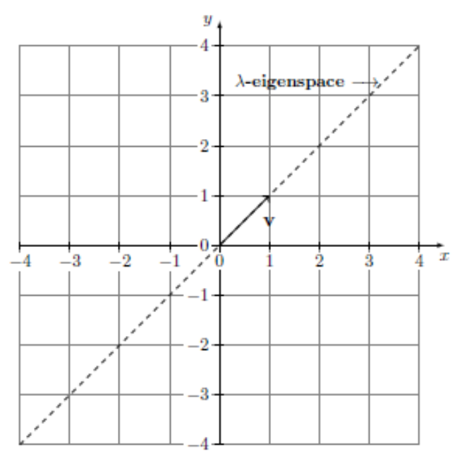

Jonathan Crofts
Nottingham Trent University
The Jordan matrix (or block) $\displaystyle J_{n_i}(\lambda)$ is the $n_i\times n_i$ matrix with $\lambda$ on the diagonal and ones directly above the diagonal, i.e.
\[ J_{n_i}(\lambda) = \begin{bmatrix}\lambda&1&0&\cdots &0\\ 0&\lambda&1&&0\\ \vdots&\ddots&\ddots&\ddots&\\0&&&&1\\0&\cdots&&0&\lambda\end{bmatrix}\in\mathbb{R}^{n_i\times n_i} \]We say that a matrix is in Jordan normal form (JNF) if it is a block diagonal matrix where the blocks are Jordan blocks, that is
\[ J = \begin{bmatrix}J_{n_1}(\lambda_1)&&&\\&J_{n_2}(\lambda_2)&&\\&&\ddots&\\&&&J_{n_k}(\lambda_k)\end{bmatrix}\in\mathbb{R}^{n\times n}\quad\text{with}\quad n_1+n_2+\cdots +n_k=n \]Diagonal matrices are in JNF since we are allowed 1 by 1 blocks
Importantly every matrix $\displaystyle A\in\mathbb{R}^{n\times n}$ is similar to a Jordan matrix $J$, that is
\[ A = PJP^{-1} \]For some invertible matrix $P$
Suppose we have a 2 by 2 matrix
\[ A=PJP^{-1} \]where the matrix $J$ is of the form
\[ J = \begin{bmatrix}\lambda&1\\0&\lambda\end{bmatrix} \]In this case we know that $A$ has eigenvalue $\lambda$ with AM=2 and GM=1
Suppose that $P=\begin{bmatrix}\mathbf{u}_1&\mathbf{u}_2\end{bmatrix}$ then we can write
\[ \begin{align*} A=PJP^{-1}\implies AP=PJ &\implies A\begin{bmatrix}\mathbf{u}_1&\mathbf{u}_2\end{bmatrix} = \begin{bmatrix}\mathbf{u}_1&\mathbf{u}_2\end{bmatrix}J\\ &\implies \begin{bmatrix}A\mathbf{u}_1&A\mathbf{u}_2\end{bmatrix} = \begin{bmatrix}\mathbf{u}_1&\mathbf{u}_2\end{bmatrix}\begin{bmatrix}\lambda&1\\0&\lambda\end{bmatrix}\\ &\implies \begin{bmatrix}A\mathbf{u}_1&A\mathbf{u}_2\end{bmatrix} = \begin{bmatrix}\lambda\mathbf{u}_1&\mathbf{u}_1+\lambda\mathbf{u}_2\end{bmatrix} \end{align*} \]The columns in the matrix equation
\[ \begin{bmatrix}A\mathbf{u}_1&A\mathbf{u}_2\end{bmatrix} = \begin{bmatrix}\lambda\mathbf{u}_1&\mathbf{u}_1+\lambda\mathbf{u}_2\end{bmatrix} \]must be equal and so
\[ \begin{align*} A\mathbf{u}_1 =\lambda \mathbf{u}_1 &\implies (A-\lambda I_2)\mathbf{u}_1=0\\ A\mathbf{u}_2 =\mathbf{u}_1+\lambda \mathbf{u}_2 &\implies (A-\lambda I_2)\mathbf{u}_2 = \mathbf{u}_1 \end{align*} \]The first equation above is the usual eigenvalue-eigenvector equation for the vector $\mathbf{u}_1$
However, the equation for $\mathbf{u}_2$ is no longer an eigenvalue-eigenvector equation
It is a generalised eigenvalue-eigenvector equation and we call the vector $\mathbf{u}_2$ a generalised eigenvector
Noting that
\[ (A-\lambda I_2)\mathbf{u}_2 = \mathbf{u_1}\implies (A-\lambda I_2)^2\mathbf{u}_2 = (A-\lambda I_2)\mathbf{u_1} = 0 \]we often solve instead
\[ \color{red}{\boxed{\color{white}{ \begin{align*} (A-\lambda I_2)\mathbf{u}_1 &= 0 \\ (A-\lambda I_2)^2\mathbf{u}_2 &= 0 \end{align*} }}} \]Suppose $\displaystyle A = \begin{bmatrix}5&4&2&1\\0&1&-1&-1\\-1&-1&3&0\\1&1&-1&2\end{bmatrix}$
It can be shown that $\lambda_1=1, \lambda_2=2$ and $\lambda_{3,4}=4$
We want to determine the GM of $\lambda=4$ and so we solve
\[ (A-4I_4)\mathbf{u}=\mathbf{0} \]Row operations can be used to reduce $A-4I_4$ as follows (exercise)
\[ A-4I_4 = \begin{bmatrix}1&4&2&1\\0&-3&-1&-1\\-1&-1&-1&0\\1&1&-1&-2\end{bmatrix}\longrightarrow \begin{bmatrix}1&4&2&1\\0&1&1&1\\0&0&1&1\\0&0&0&0\end{bmatrix} \]It follows that the vector $\displaystyle \mathbf{u} = \begin{bmatrix}\alpha&0&-\alpha&\alpha\end{bmatrix}^T$
The eigenspace corresponding to $\lambda=4$ is given by
\[ \Biggl \{ \alpha\begin{bmatrix}1&0&-1&1\end{bmatrix}^T: \alpha\in\mathbb{R} \Biggr \} \]so that the GM=1
It follows that $A$ is not diagonalisable; however, it does have a JNF such that
\[ A = P\begin{bmatrix}1&0&0&0\\0&2&0&0\\0&0&4&1\\0&0&0&4\end{bmatrix}P^{-1} = P\begin{bmatrix}J_1(1)&&\\&J_1(2)&\\&&J_2(4)\end{bmatrix}P^{-1} \]Also
\[ \chi_A(t)=m_A(t)=(t-1)(t-2)(t-4)^2 \]Suppose that $A\in\mathbb{R}^{2\times 2}$ there are two cases
In this case $J$ is diagonal and given by
\[ J = \begin{bmatrix}\lambda_1&0\\0&\lambda_2\end{bmatrix} \]Here the eigenvalues are distinct and AM=GM=1 in both cases
To start we compute the eigenspace corresponding to $\lambda$
If the GM equals 2 then
\[ J = \begin{bmatrix}\lambda&0\\0&\lambda\end{bmatrix} \]Otherwise we consider the generlaised eigenspace, i.e. find solutions of
\[ (A-\lambda I_2)^2\mathbf{u}=\mathbf{0} \]In this case
\[ J = \begin{bmatrix}\lambda&1\\0&\lambda\end{bmatrix} \]To find a basis of eigenvectors and generalised eigenvectors we proceed as follows
Compute the Jordan normal form of the matrix
\[ A = \begin{bmatrix}4&1\\-1&6\end{bmatrix} \]To start let us compute the eigenvalues of $A$
\[ \chi_A(t) = \begin{vmatrix}4-t&1\\-1&6-t\end{vmatrix} = (4-t)(6-t)+1 = t^2-10t+25=\color{red}{\boxed{\color{white}{(t-5)^2}}} \]The AM for $\lambda=5$ is two
To determine $J$ we need to know the GM
Let us determine the corresponding eigenspace
\[ A-5I_2 = \begin{bmatrix}-1&1\\-1&1\end{bmatrix} \longrightarrow \begin{bmatrix}1&-1\\0&0\end{bmatrix} \]The eigenspace is thus given by
\[ \Biggl \{ \alpha\begin{bmatrix}1\\1\end{bmatrix} : \alpha\in\mathbb{R} \Biggr \} \] And so the GM of $\lambda=5$ is 1 and so less than the AM
We need to compute a generalised eigenvector
i.e. a vector such that
\[ (A-5I_2)^2\mathbf{u}=0 \]By Cayley-Hamilton any vector $\mathbf{v}\in\mathbb{R}^2$ satisfes the above equation
From the previous slide we see that we are free to set $\mathbf{v}$ equal to any vector that is not a multiple of $\begin{bmatrix}1&1\end{bmatrix}^T$
Choose as our generalised eigenvector
\[ \mathbf{v} = \begin{bmatrix}1&0\end{bmatrix}^T \]This is the simplest vector satisfying $(A-5I_2)^2\mathbf{v}=0$ that does not lie in the $\lambda$-eigenspace
We need to choose a related eigenvector, i.e. $\mathbf{u}$ and $\mathbf{v}$ must satisfy the equation
\[ (A-5I_2)\mathbf{v}=\mathbf{u} \]So we choose
\[ \begin{align*} \mathbf{u} &= (A-5I_2)\mathbf{v} = \begin{bmatrix}-1&1\\-1&1\end{bmatrix}\begin{bmatrix}1\\0\end{bmatrix} =\begin{bmatrix}-1\\-1\end{bmatrix}\\\\ &\implies \color{red}{\boxed{\color{white}{P=\begin{bmatrix}\mathbf{u}&\mathbf{u}\end{bmatrix}^T = \begin{bmatrix}-1&1\\-1&0\end{bmatrix}}}} \end{align*} \]